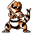
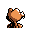

#249
Krokorok
GroundDark
A special membrane over its eyes can sense heat This lets it hunt even in complete darkness
Base stats Total 306
HP60
Attack82
Defense45
Speed74
Special45
Details
- Species
- Sand Croc
- Height
- 3'03"
- Weight
- 73.6 lb
- Catch rate
- 90
- Base exp
- 123
- Growth
- Medium Slow
Level-up moves
LevelMoveType
StartRageNormal
StartLeerNormal
StartSand-AttackNormal
StartBiteDark
Lv 6Sand-AttackNormal
Lv 12BiteDark
Lv 18HeadbuttNormal
Lv 24DigGround
Lv 31CrunchDark
Lv 39Rock SlideRock
Lv 43EarthquakeGround
Lv 47ThrashNormal
Evolution
Evolves from Sandile
Where to find
Not found in the wild — evolve, trade or catch it elsewhere.
TM / HM
TM04 CrunchTM06 ToxicTM08 Body SlamTM09 Take DownTM10 Double-EdgeTM26 EarthquakeTM27 FissureTM28 DigTM31 MimicTM32 Double TeamTM34 BideTM40 Sludge BombTM44 RestTM48 Rock SlideTM50 SubstituteHM01 CutHM04 Strength